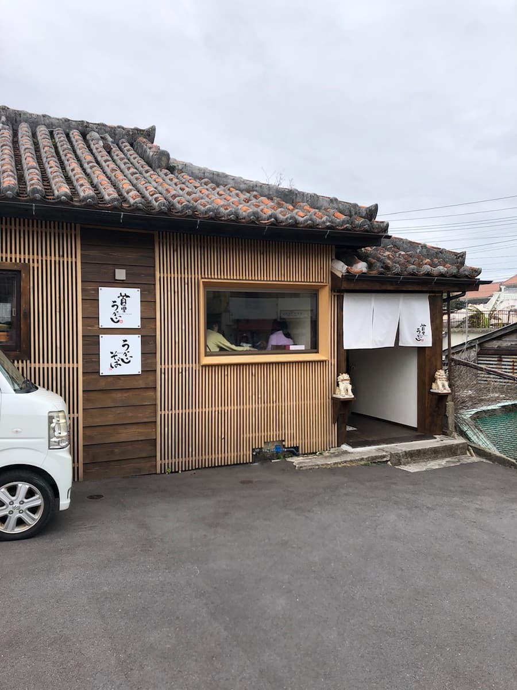
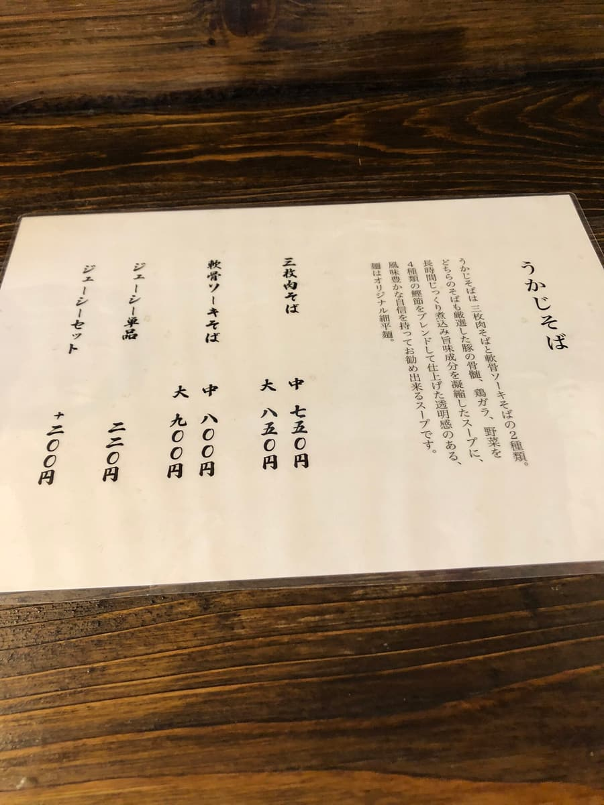
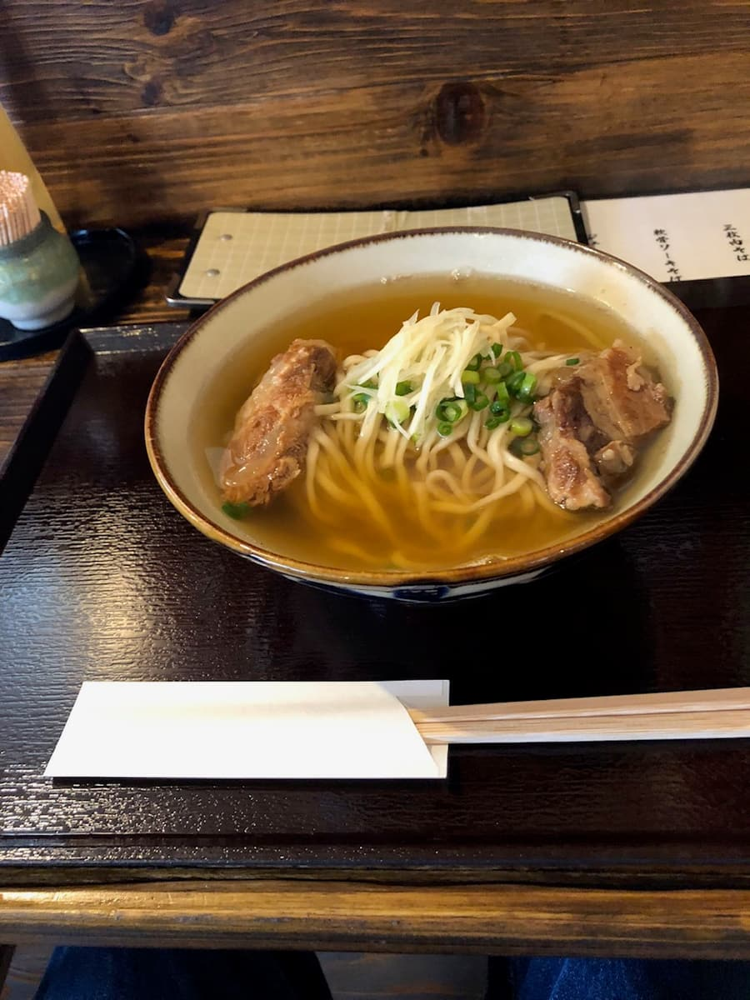

I ate here in February 2023 😄

Since it's close to tourist spots like Shuri Castle, I thought it might be crowded with tourists, but I was able to park in the lot in front of the shop, and it was empty.


I ordered the Soft-bone Soki Soba (medium). The broth is the light type, a blended stock of pork, chicken and bonito. The noodles are flat and thin. The soft-bone pork ribs (nankotsu soki) are melt-in-your-mouth and delicious, but the broth was too light, and it felt weak in flavor.
Rating (8.5/15): According to the explanation on the menu, they seem to be particular about the broth, but I'm sorry, to me the flavor was too weak, and I felt it was too light.
Noodles: ★★★☆☆（3）
Soup: ★★✬☆☆（2.5）
Toppings: ★★★☆☆（3）